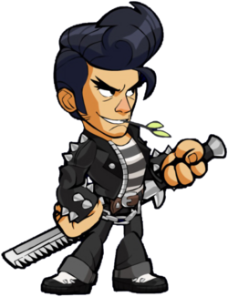

EVENTS
1. Summer Event

The Summer Event is held during summer in the
northern part hemisphere and as such is Skin Hero
themed around summer During Event is held for 4
Weeks which a 400 Coin Gold login bonus can be
earned each day And During The Summer Event Can
be purchased Special item for during summer event.
a. Atlantic Onion (120 Coin Mammorth)
b. Wipein Mix (120 Coin Mammorth)
2. Back to Holiday Event
The Back to Holiday event held in the northern part
hemisphere during holidays and as such is Skin Hero
themed around the start of Holiday. During Event is
held for 4 Weeks which a400 Coin Gold login bonus
can be earned each day And During The Back To
Holiday Event Can be purchased Special item for
during Back To Holiday eventIts special items
such as Skin Hero :
a. Greater Light Roji (120 Coin Mammorth)
3. Frawchristmas Event

The Frawchristmas Event an event held in December in
conjunction with celebrations Christmas.During Event
is held for 3 Weeks which a 400 Coin Gold login bonus
can be earned each day And During The Frawchristmas
Event Can be purchased Special item for during
Frawchristmas event. Its special items such
as Skin Hero :
a. Break the Wall Termos (120 Coin Mammorth)
b. SantaClaus Fu Fhang (120 Coin Mammorth)
4. Knight Event
The Knight Event is one of the Crossover Events in
partnership with Boat Club that introduces Knight
Onion and Specter Mix. This event also features
a new skin Hero, new Map, and bonus login Gold!
This Knight event initially launched on October
16rd, 2021 in patch 0.20, and lasted 4 weeks.
The event returned on March 14th, 2021 in patch
1.20. Features a new skin Hero :
a. Knight Onion (245 Coin Mammorth)
b. Specter Mix (245 Coin Mammorth)
5. Hell Event

The Hell Event is one of the Crossover Events in
partnership with Dark House that introduces
Gruagach . This event also features a new skin Hero
and bonus login Gold! This Hell event launched on
May 16th, 2021 in patch 2.30, and lasted 1 weeks.
Features a new skin Hero :
a. Guard Termos (250 Coin Mammorth)